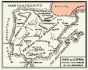

De: La Frikipedia, la enciclopedia extremadamente seria.
De: La Frikipedia, la enciclopedia extremadamente seria. De: La Frikipedia, la enciclopedia extremadamente seria.
| De la serie Países del planeta tierra: | |||||
| España y ¡olé! | |||||
|---|---|---|---|---|---|
| |||||
| Lema: Tarde, mal y a rastras | |||||
| Himno: {{{himno_nacional}}}
| |||||
| 
| |||||
| Capital | Madriz | ||||
| Mayor ciudad | Utrera. | ||||
| Lenguas oficiales | Español sin tacos (en extinción), HOYGAN, SMS | ||||
| Gobierno | República Carlista Postfranquista y de borrachera | ||||
| Jefe de Estau | Rey Anarcosindicalista: Magneto I PG: Rajoy | ||||
| Área | islas afortunadas, Baleares, Ceuta, Melilla, Islote Perejil y Gibraltar | ||||
| Población | 45 millones | ||||
| Moneda | 2002 al 3472 | ||||
| Zona horaria | GTM +1 (GMT en Canarias) (GMT +2 en Catalunya) | ||||
| Dominio Internet | .tio | ||||
| Código telefónico | diecitrece
| ||||
| No hay mal que por bien no venga | |||||
Este artículo trata sobre el país que te "da" por culo. Para el país donde te roban, véase Espiña.
República monárquiaizante anarcosocialista-fascistaindependista de carácter liberoconservadurista progresista centralista federalizante totalmente ficticia e inexistente cuya situación geográfica se debate entre Centroamérica, el norte de África y el planeta 458E del sistema solar 5ER-908 de la nebulosa tx7988-porn69 (Ver mapa de la Tierra). España (del íbero spain [del latín Ass Pain]), también llamado Cojonilandia, debido a que todo se hace por cojones, es un pequeño país montañoso dominado por una estatua gigante de mármol del generalísimo Francisco Frasco (El Paquísimo) poblada sobretodo por Ninjas, Hobbits y Tunos. De aquí proviene el homoerectus, el homosapiens, el homosexual y el matrimonio gay. Entre 1936 y 1975 fue conocida como Espiña.
También el elemento 112 (uno-uno-dos) de la Tabla periódica.
Desde el año 300 al año 3002, fueron ladrones y lo siguen siendo explotando hoy los hijos inmigrantes de la ciudad del "morado". Saquearon la mitológica ciudad de "El morado", y enterraron las riquezas, pero olvidaron donde las habían dejado, y cayeron en manos del payasismo. Este pequeño país, hundido en la miseria, chapuza y picaresca en la primera mitad del siglo XX, creció como una fénix cuando empezó a recibir limosnas de sus vecinos civilizados del norte (europeos), y hoy vive la síndrome del nuevo rico, presumido de una economía que pronto explotará como la burbuja donde se cimienta, acabando con la vida de nuestro planeta tal y como la conocemos hoy base de la economía ejpañola. Lo habitan 40 millones de canis mediomoros.
Entre otros logros de este país mediocre, tiene el honor de haberse convertido en la 186ª potencia económica mundial a base de dormir la siesta y flagelarse viendo porno. Además recientes estudios demuestran que todas las chicas guapas han nacido en España (de padres italianos) o son descendientes de un español (de padres suecos).
Un punto muy destacable de la cultura española es la ironía que no se usa nunca (para los guiris: es ironía). Y la capacidad dicotómica de la que hacen gala, también por supuesto, en la cultura. Aquí o te gusta algo o es una m%@@@a. Aun así los españoles están de acuerdo en algunas cosas que conforman lo que podemos llamar el núcleo español de la cultura que, junto con la religión España, se pueden resumir en los tópicos de:
Para su cultura, véase Anexo:Cultura de Aspaña
Las mujeres y los hombres españoles son dos entes totalmente separados e incluso se podría decir que casi son de especies diferentes de humanos. Esto se ve reflejado en el lenguaje, por ejemplo al saludar. Los hombres usan algo como esto:
-¡c*#**OO!! ¡¡cuánto tiempo sin vernos, c%*@*&azo!! ¡¡Vamos p'al Bar y ma cuentas como t'han salio
s'os cuernos!!
Mientras se piensa
-Qué tío tan de p@*@ madre, que pena que no nos veamos más a menudo.
Las mujeres son harina de otro costal
-¡¡HÍÍÍÍÍ!! ¡¡Paqui, cuanto tiempo!! ¡¡Estás moníííísima!! ¡¡parece kas adelgazao paki!!! ¡¡¿Y qué te has hecho en el pelo?!!
Mientras se piensa -Tenía que encontrarme a esta víbora gorda y desgreñada justo hoy que estoy con la regla.
Todos los españoles son o rojos o fachas. España también es conocido como Estado opresor.
Lo que más asombra de la cultura Española es su interés por matar con crueldad a los animales (especialmente a los toros) es interesante observar cuantas formas diferentes tienen de matarlos: con espada, con lanzas, etc. pero eso no es todo, también les prenden fuego, los tiran de un campanario o los pescan con dinamita. ¿Cultura?
La economía española tiene poco de mía y mucho de ellos y se sustenta principalmente en el ladrillo, que es la base de la economía ejpañola. De hecho, las reservas de oro del Banco de España no tienen lingotes de oro sino ladrillos. Actualmente se pueden realizar transacciones bancarias y pagos en efectivo con ladrillos en toda la geografía peninsular. Se está barajando la posibilidad de cambiar la peheta por el ladrillo como moneda.
Otra enorme fuente de ingresos es el refinado de Turistas. Dicha industria consiste en importar algunas Suecas y otros blancuchos de Europa y después de unas intensivas sesiones de Bar, Playa y Paella se los exporta a su país de origen.
Una nueva fuente de ingresos emergente es la de ir contando tus trapos sucios en cualquiera de los 3.4667.890 programas culturales del corazón. Existen dos formas: Una; apuntándote a cualquiera de los friki-concursos de la tele. Dos; buscándote a otro famosillo del panorama nacional e ir contando que te ha maltratado o te has acostado con él y denunciarlo en el Alto Tribunal Nacional de la TV (máximo órgano legislativo-judicial de este país de países-naciones). Completamente, tienes que exponer tus glándulas mamarias en el “Intervius” (que es como el BOE –Boletín Oficial del Estado- en otros países).
Otras fuentes de ingresos son las ventas de camisetas de los galácticos, los anuncios de Beckham (cuyos ingresos van: un 35% para el jugador, un 20% para el Madrid, un 10% para Adidas, un 20% para el Reino Unido y el 15% restante para España), el envío masivo de SMS el día de Nochevieja, y el supuesto oro de América (si es que queda, que ni alcanzamos a llevarnos algo decentemente significativo, ni nos esperábamos que las colonias americanas se nos revelaran, todo no es más que una utopía de los juegos de vídeo).
La delincuencia está en auge porque si te roban y te defiendes eres tú el que va a la cárcel.
La balanza es deficitaria, debido a que la balanza se desequilibra por la masiva compra de cocaína a Colombia para satisfacer a nuestros jóvenes e inocentes cocainómanos (España, líder mundial en su consumo, empatada con Gibraltar). También contribuye al déficit los mangoneos de los gobiernos de turno, aunque no es probable que se atrevan a registrarlo en los estudios de economía.
El PIB viene a ser lo que reúnan Florentino Pérez, la herencia de Jesús Gil y Jesús de Polanco. El PIB per cápita es otra cosa y no suele llegar a mucho más de tres leros para el botellón a la semana.
Paso de ser un país pobretón y la burla de los demás países europeos, a ser un país medianamente decente impulsado por los vecinos que se sentían avergonzados de tenerlo como vecino. Pero al subir la economía, solo se enriqueció mas el presidente, los banqueros, el rey, los toreros y los jugadores de fútbol, ya que los demás, de clase media para abajo, siguieron igual de j%*idos.
La actual (2007 d. del cristo) capital económica de este reino de paises-naciones-realidades nacionales es MarBella, cuyos ex alcaldes, GIL el magnánimo, Cachuli el pantojo, Mar i Sol LLawe e Isa G. Marquitos (ex del partido P.S.O.E. -Partido de los socios-listos Organizados Españoles-), dirigidos por el gran constructor de constructores Juan A. Rocayladrillos, S.L. la han puesto en la cabecera de las capitales económicas del mundo a base de ladrillo y 3% (sistema egipcio: pa mi bolsillo). Ahora casi todos está procesados por los dos tribunales: el de Justicia Española y el Alto Tribunal de Los Platós de TV de la prensa-rosa.
Hay hasta un total de 17 tribus españolas tantas como comunidades autónomas (Ceuta y Melilla no cuentan). Y ahora una pequeña descripción de cada una:
Llueve en todas partes menos en Caribe. Pero en Cataluña no por que va muy gafados.
Antes de España existio otro pais llamado carabanchel, actualmente la ciudad más grande del país. Se funda como una monarquía con tendencia al régimen militar (por lo que el país está siempre delgado).
En 1492, un español llamado Andres Colón descubre un continente al que llamaría Andresland Colon, pero llegó tarde a sacar la patente y se le adelanto un tal Américo. Desde entonces en España se va de vacaciones a ciudades turísticas como Marbella, Torremolinos, Benidorm o Chiclana de la Frontera.
Entre 1512 y 1689 la península (incluyendo Portugal, Andorra, Gibraltar y Catalunha) estuvo gobernada por Shauron y su fiel secuaz Saruman, y aunque Alatriste intentó salvar el mundo terminó en un bar de putas y una muñeca hinchable sin hinchar. Así que durante esos años los orcos tuvieron más derechos que las mujeres (y los hombres), este tipo de política no tiene nombre, porque misteriosamente nadie se acuerda de lo que pasó, aunque un paisano de un país dijo que recuerda cómo le borraon la memoria con un hacha y lo que había pasado antes. Esos años fueron fatales, y el reinado de Shauron no finalizó hasta que salió en calzoncillos al estrado para dar un mitin sobre la importancia de su reinado, y se le cayó el anillo mágico. Entonces Frodo vino, cogió el anillo y como tenía hambre se lo comió, después cogió una indigestión y se murió de un derrame de uñas de los dedos meñiques de los pies.
El primer Borbón era en verdad un calamar en desacuerdo con la política rural del puerto de las chapas, done reinaba por antonomasia el último emperador chino que tenia cojera y babeaba con asiduidad permitiendo a los Jefes de Estado montar un mercadillo de piedras con formas raras para recoger dinero para una investigación sobre el color de las nubes.
En 1936 un pequeño gallego cabreado llamado Franco monta un golpe de estado y toma el país durante 40 largos años, formando Espiña, período en el cual pasa a llamarse el Paquísimo. Tras un largo período de hambruna y posguerra el Paquísimo inventa los Pantanos y el Turismo explotando una materia bruta llamada Turistas. Paquísimo muere en 1975 y pasa a convertirse en una estatua de piedra gigante de piedra para poder vigilar a su padawan Juan Carlos Magneto I en su regencia del país.
En 1982 nace naranjito en un laboratorio biogenético al mezclar un futbolista con una naranja. Como no le daban salida la hicieron mascota del mundial. El éxito llevó a crear otros monstruos biogenéticos como Curro, y Cobi.
En 2004, se decide ampliar la redes de subtes, para hacerlo mas rápido abrieron paso con los subtes en funcionamiento. Conocido como 11-M, 11 metros mas y llagaban a los 200. Por suerte no hubo personas heridas, sólo algunos españoles.
En 2008 (por el culo...) se sustituye el himno nacional por el Chiki-Chiki, por lo que el Estado se queda con un déficit de tropecientos mil millones de euros debido a los derechos de autor que tiene que pagarle a la SGAE.
Después de la derrota del arzobispo Magneto).
Entretanto, el prócer de la patria del Reino de Oz, J.L.R.Zapatero, se hace cargo de los chavales con más pena (o pene) que gloria.
Para ver la lista de Españoles famosos, véase: Anexo:Españoles famosos.
En la p@*@ nalga de Europa (afortunadamente, Portugal nos da razones para seguir adelante). No se crea eso del 99% de alfabetización (a no ser que consideren el lenguaje SMS como alfabetización).
Datos interesantes sobre las escuelas españolas:
Muy ligada a la economía de España, y al turismo, se encuentra la meteorología. Se pueden distinguir 5 fases climáticas por las que ha pasado España:
Intentando rodear a Bilbao, obviamente sin conseguirlo, como puede apreciarse en este mapa del Instituto Bilbaíno de Cartografía que evidentemente es inexacto ya que todo el mundo sabe que Bilbao no es tan pequeño.
Del Reino Republicano de Madrid nos llega este otro mapa, mucho más fiel a la realidad:
España se compone de una península unida (aunque actualmente el gobierno investiga la manera de convertirla en un archipiélago). De esa península hay que restar, por orden de tamaño, Andorra, el Peñon de Gibraltar y Portugal quedando así constituida, por ahora, por el inexistente País Vasco, Cataluña, Canarias, Andalucía, Galiza, Aragón, Castilla y León, Castilla-La Mancha y resto España. Hasta finales del siglo XX también poseía el actual archipiélago alemán(conquistado por los anteriormente sodichos guiris Islen Balearempf.
Adicionalmente tiene en África dos ciudades y unas islas donde viven los canarios, bien sean pájaros o mamíferos.
España está defendida por una barrera de protones y el fantasma del rey Pelayo ante los constantes intentos de invasión islámica aparte de portugal que la defiende de los numerosos tsunamis que nos atacan.
Por supuesto y bien dado esto esta escrito por un medio llamado pelukas anarkoscialdemocrata al cual no le llega a la suela de los zapatos en cuestión de inteligencia a cualquier susodicho cani o jevi del metal. Y cómo no, en esta geografía existen y están en peligro de extinción el macho ibérico español autóctono de esta geografía, vago donde los haya, este animal debe de ser protegido para preservar cosas como el "sillon-ball".
Son viciados en el Wrestling o Lucha Libre, compran videojuegos, peliculas, shows, PPV, descargan muchas cosas por internet que les traen virus, los ratings son los mejores en España!.
Según las más modernas técnicas de adivinación, quiromancia, futurología, prestidigitación y cienciología, los más expertos adivinos, entre los cuales están Anthony Blake, la pitonisa Lola, Paco PollasPorras y Santi Molezún, en el 2020 habrán tenido lugar los siguientes acontecimientos:
En el artículo de España en el 2020 se cuenta todo con más detalle... preparaos para lo que viene...
En España, somos especialistas en inventar cosas ya inventadas con un único añadido, el palo, veamos ejemplos:
Aunque también somos inventores de otros productos sin palo:
«A España le predigo un futuro desdichado. Veo guerras, epidemias y ojetes abiertos. Me lo ha dicho un puerro.»
~ Paco Porras sobre España
«España iba bien, ahora no sé (hip)»
~ José María Aznar sobre España
«España es, ante todo, una unidad de destino: el Bar.»
~ José Antonio Sobrino de Rivera del Duero sobre España
«¡Españoles hijos de p@*@, españoles culiaos! ¡Gallegos culiaos vayanse a la m%@@@a! »
~ Shileno Pinochetista sobre España
«¡España son muchas, pequeñas y cabreadas.»
«¿¡Pero por qué no te callas!? »
~ Juan Carlos I hacia Chavez
1. Defenderás tu patria, incluso de tu patria.
2. Te afiliarás al gran club de furbó que es el Real Madrid.
3. Honrarás a Fary.
4. Halagarás la tricolor de tercera franja desteñida.
5. No te planterarás el ser español.
6. No hincarás el codo.
7. Honrarás la baja sobre todas las cosas.
8. Serás superior en lo que a gases se refiere.
9. Si vas a Londres, tu no conduces al revés, son ellos, ya que el método español es el único válido.
10. En toda wena tele española no faltará la bailaora ni el torito de trapo encima de la susodicha, aunque esta tele sea de plasma.
11. Una vez al mes, se realizara una ofrenda al toro de Osborne, tomando la respectiva botella de Soberano
  Imperios de Europa Imperios de Europa
|
|---|
| Eslovaquia |
Autor(es):